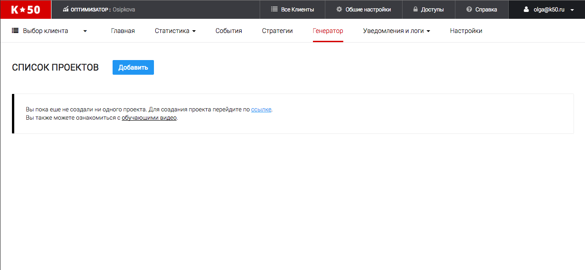
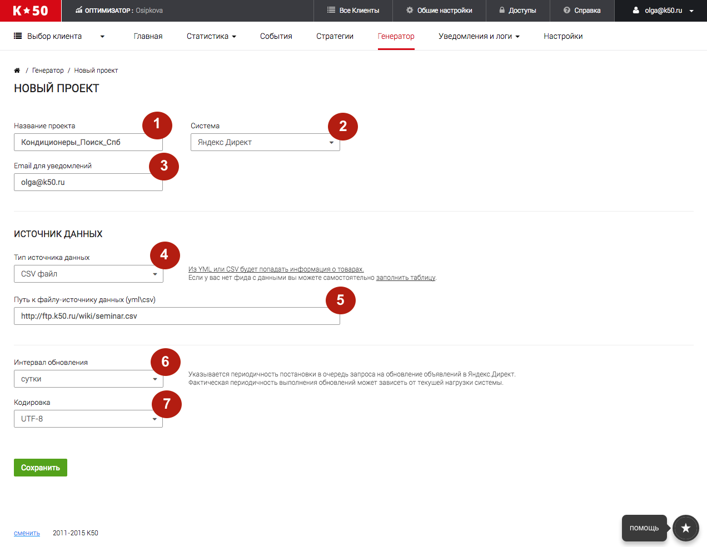
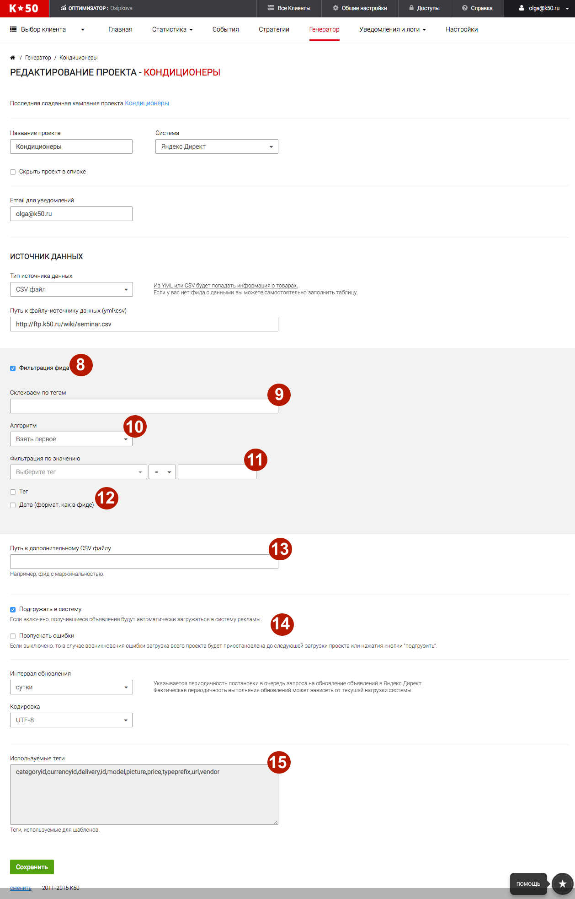

В данный момент сервисы К50:Генератор в процессе переезда на новый дизайн. Данная статья актуальна не для всех клиентов. Если вы не нашли ответ на свой вопрос, обратитесь к старой справке
Добавление проекта
После того, как вы создали проект внутри своего инстанса, перейдите по вкладке Генератор и нажмите "Добавить"

Далее вам будет необходимо заполнить все поля для создания проекта.
Обратите внимание
В рамках одного проекта вы можете работать только с одним фидом! Если вы хотите работать с несколькими фидами или с товарным и категорийным фидом, вам необходимо завести по одному новому проекту на каждый фид.
Не все тарифы позволяют работать с несколькими проектами!
Создание проекта

Введите название вашего проекта
Выберите систему, в которую будут загружаться сгенерированные рекламные кампании.
Укажите ваш email для уведомлений
К50:Генератор работает с фидами двух форматов: CSV и YML. Также можно работать с таблицами создаваемыми в интерфейсе. Подробнее про типы фидов и их особенности читайте в этой статье.
Пропишите ссылку, по которой ваш фид доступен к скачиванию.
Мы работаем как с файлами лежащими на вашей стороне, так и с файлообменниками (GoogleDrive, DropBox и т.п.). Мы не работаем с файлами созданными с помощью инструмента Google Sheets (формат файла созданного через GoogleDrive)
Задайте периодичность, с которой К50:Генератор будет проверять наличие и другие динамические параметры в вашем фиде и обновлять рекламные кампании.
Периодичность возможна от 1 раза в неделю до 1 раза час.
В случае очень объемного фида, рекомендуем не ставить обновление слишком часто.
Фактическая периодичность выполнения обновлений может зависеть от текущей нагрузки системы.
Стандартно csv файл в кодировке utf-8, а yml файл в кодировке windows-1251.

После того, как вы заполните все обязательные поля, у вас автоматически создастся первая кампания с тем же названием, что и проект. Также появятся дополнительные, необязательные поля настройки проекта
Фильтрация фида
Фильтрация - это инструмент для "склеивания" исходного фида.
К50:Генератор по умолчанию формирует объявления для всех объектов из файла. Рассмотрим примеры использования Фильтра:
-
Наличие дубликатов
Если в исходном файле есть дублирование строк или офферов, например, по полю name – название товара, то в кампании будет несколько конкурирующих объявлений по одному товару. Если дубликат один - его можно легко исключить из кампании через Правило. Однако, если дубликатов много и фид динамический - использовать Правила не очень удобно. В этом случае можно воспользоваться Фильтром и склеить строки с одинаковым значением поля name. В результате склейки по полю name, в фиде останется только по одной строке на каждое уникальное название. -
Создание категорийных кампаний
Теперь при наличии полного товарного фида, вы можете создавать категорийные кампании на основе товарного файла с помощью Фильтра. Например, склеив товарные предложения по значению typeprefix и vendor, вы получите фид с уникальными строчками для каждой пары значений typeprefix и vendor.
Для настройки фильтра обязательными полями являются поля "Склеиваем по тегам" и "Алгоритм"
В данном поле необходимо указать название тега, по которому вы хотели бы склеивать фид.
Например, указывая name, вы склеиваете файл по названию товарных предложений.
Несколько тегов в данном поле перечисляются через запятую.
Например, если товар считается одинаковым только в том случае, когда совпадают и названия товара и бренд, то необходимо указать теги name, brand
Это способ выбора одного объекта среди группы объектов, которые склеиваются в один. Допустимы следующие варианты алгоритма:
- Взять первое – из одинаковых объектов будет выбран первый по очереди объект.
- Взять наибольшее – из одинаковых объектов будет выбран объект с наибольшим значением тега, указанного в дополнительном поле: «Фильтруемый тег»
- Взять наименьшее - из одинаковых объектов будет выбран объект с наименьшим значением тега, указанного в дополнительном поле: «Фильтруемый тег»
В данном поле можно указывать дополнительное условие, которому должны соответствовать объекты, это поле работает аналогично Правилам.
Хз?
Ссылка на файл с дополнительной информацией о товаре, например с маржой, конверсией,ставками и тд. Фид может быть полезен для подсчета индивидуальных ставок для каждого товарного предложения. Фид так же представляет собой таблицу с разделителем точка-запятая, первый столбец состоит из id товарных предложений, должен иметь те же значения что и первый столбец в главном CSV файле или совпадать со списком offerid в главном YML файле.
Подгружать в систему - Если включено, получившиеся объявления будут автоматически загружаться в систему рекламы.
Пропускать ошибки - Если выключено, то в случае возникновения ошибки загрузка всего проекта будет приостановлена до следующей загрузки проекта или нажатия кнопки "подгрузить".
Теги из фида которые вы будете использовать для составления текстовых шаблонов и составления ключевых слов. После сохранения теги автоматически подтягиваются из фида. Заполнять в ручную данное поле не нужно.
Подробнее про теги и их синтаксис читайте в этой статье.